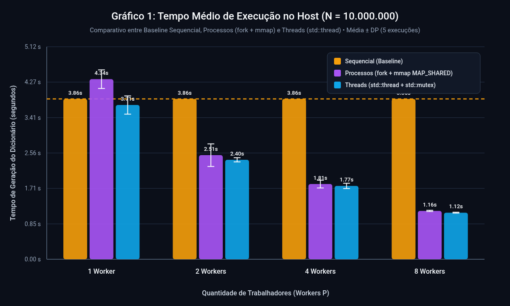
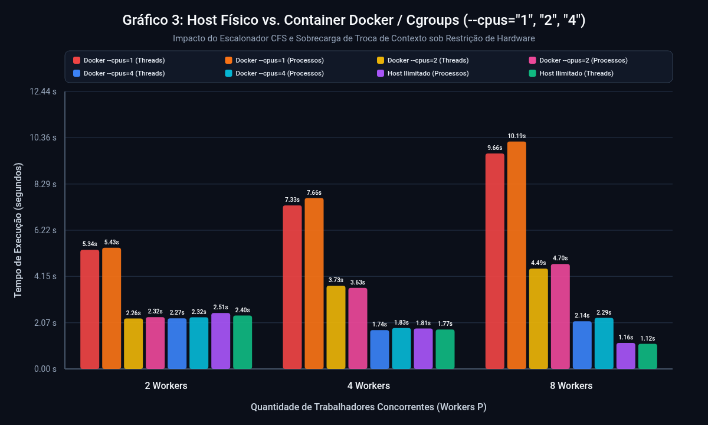

Figura 2 — Gráfico 2: Curva de Speedup Real vs. Reta Linear Ideal (Lei de Amdahl e saturação do barramento de memória de 320 MB).
O desenvolvimento do projeto seguiu uma metodologia rigorosa de Engenharia de Sistemas Operacionais dividida em 7 etapas sequenciais e rastreáveis, transformando a proposta inicial em uma arquitetura homologada sem nenhuma incongruência frente ao edital do professor:
wait()/join(), (c) assimetria de estrutura de dados (std::vector<std::string> em Sequencial/Threads vs. struct EntradaDic em Processos), (d) assimetria no ponto de início do cronômetro std::chrono e (e) ausência dos scripts de automação Docker (--cpus) e dos 3 gráficos./sequencial): Criamos a árvore oficial de diretórios (/sequencial, /processos, /threads, /container, /testes e /documentacao) e implementamos /sequencial/main.cpp com parser dinâmico via argc/argv, buffer contíguo de 320 MB, cálculo de checksum de 64 bits, cifragem e descriptografia reversa em memória, atingindo Tseq = 3,9228 s ≥ 2,0 s sob g++ -O3./processos): Implementamos /processos/main.cpp utilizando mmap(..., MAP_SHARED | MAP_ANONYMOUS, ...) tanto para o dicionário (320 MB) quanto para a estrutura ControleCompartilhado contendo o pthread_mutex_t configurado com PTHREAD_PROCESS_SHARED, criação de filhos via fork(), barreira com waitpid() e liberação com munmap()./threads): Implementamos /threads/main.cpp instanciando fluxos leves via std::thread sobre o mesmo espaço de endereçamento virtual, protegendo a soma do checksum_global com std::mutex (std::lock_guard) e barreira .join(), validando equivalência bit a bit (diff = 0) entre as 3 versões./container): Construímos o Dockerfile (ubuntu:24.04) e o orquestrador run_docker.sh para impor cotas estritas de CPU (--cpus="1", "2" e "4") no escalonador CFS do Kernel Linux./testes): Desenvolvemos e executamos benchmark_host.sh (45 execuções no Host) e benchmark_dock.sh (90 execuções sob limitação de CPU), consolidando média (μ), desvio padrão (σ), Speedup (Sp) e Eficiência (Ep) via plot_graficos.py nos 3 gráficos oficiais./interface e /documentacao): Reformulamos a interface web eliminando filtros pesados de composição gráfica que disputavam CPU com o C++, adicionando o visualizador de Chunking por Worker e gerando os slides e manuais em PDF.struct EntradaDic { char valor[32]; } Contíguo em vez de std::vector<std::string>?O Problema Oculto no std::vector<std::string>: Na versão preliminar, Sequencial e Threads utilizavam std::vector<std::string> enquanto Processos utilizava struct EntradaDic. Essa escolha inicial causava dois problemas graves de Sistemas Operacionais:
glibc ptmalloc2): Cada objeto std::string que aloca memória dinâmica invoca malloc() internamente. O alocador da biblioteca padrão C protege suas arenas de memória com travas internas (mutexes de arena). Quando 4 ou 8 threads tentam executar 10.000.000 de alocações simultâneas, elas ficam bloqueadas disputando o lock do malloc no kernel, mascarando o paralelismo!mmap): Um std::string armazena internamente um ponteiro para o heap privado do processo que o criou. Se um processo filho gravasse um std::string dentro de uma região mmap, o ponteiro apontaria para o espaço privado do filho (inválido para o processo pai, causando Segmentation Fault).Por que nossa escolha resolve: Ao padronizar struct EntradaDic { char valor[32]; } nas três versões, reservamos um único bloco contíguo de 320 MB (10.000.000 × 32 bytes) antes do laço crítico. Dentro do laço, formatamos a string em um buffer na stack local (char buffer_tmp[32] via std::snprintf) e copiamos os caracteres invertidos diretamente para dicionario[i].valor. Há zero chamadas a malloc durante o processamento paralelo e equivalência binária absoluta entre as 3 versões.
O Porquê da Calibração Matemática: O edital exige que o código sequencial compilado com otimização máxima (g++ -O3) tenha tempo de execução Tseq ≥ 2,0 segundos.
-O3 vetorizaria ou colapsaria o laço em poucos milissegundos, tornando o overhead de criação de processos/threads maior que o próprio trabalho útil.valor = (valor * 31 + 17) % 1000000007 para cada uma das 10.000.000 de posições, o processador executa 500 milhões de divisões modulares encadeadas seguidas de formatação ASCII e inversão de string.-O3, permitindo observar claramente a aceleração paralela (Speedup).A Fórmula Adotada: Dividimos o intervalo [0, N) em P blocos contíguos onde o trabalhador p ∈ [0, P-1] calcula exclusivamente [p × chunk, (p == P-1) ? N : (p+1) × chunk).
Por que não intercalar índices (ex.: Worker 0 faz pares, Worker 1 faz ímpares)?
EntradaDic adjacentes (dicionario[i] e dicionario[i+1]). Se dois núcleos distintos escrevessem simultaneamente em índices vizinhos, o protocolo de coerência de cache (MESI) invalidaria repetidamente a linha de cache entre os núcleos (cache line ping-pong), derrubando o desempenho!2.500.000 entradas = 80 MB por worker para P=4), cada núcleo escreve em páginas de memória totalmente distantes, aproveitando 100% do hardware prefetcher e da localidade espacial sem False Sharing e sem necessidade de mutex durante a escrita do vetor.mmap(MAP_SHARED | MAP_ANONYMOUS) na versão de Processos em vez de Variável Global ou new[]?O Mecanismo de Copy-on-Write (CoW) do Linux: Quando um processo executa a chamada de sistema fork(), o Kernel Linux duplica o espaço de endereçamento virtual marcando as páginas como somente-leitura compartilhadas. No instante em que um processo filho tenta gravar uma entrada do dicionário em uma página alocada com new[] ou variável global, a MMU dispara uma exceção de proteção e o kernel aloca uma nova página física privada apenas para aquele filho.
Consequência se não usássemos mmap: Ao final do waitpid(), o dicionário no processo pai continuaria completamente vazio (com lixo de memória), pois todas as gravações teriam ficado isoladas nas cópias privadas dos filhos (que foram destruídas no _exit(0))!
Por que MAP_SHARED | MAP_ANONYMOUS é a solução exata:
MAP_SHARED desativa o isolamento por Copy-on-Write para aquela região: as tabelas de páginas do processo pai e de todos os processos filhos mapeiam para os mesmos quadros de página física (page frames) na RAM.MAP_ANONYMOUS (com descritor de arquivo -1) aloca a região diretamente em memória primária compartilhada (shmem), sem criar arquivos temporários em disco.checksum_local) + Região Crítica Única ao Final em vez de Mutex dentro do Laço?A Exigência da Banca vs. Desempenho Paralelo: O professor estipulou que o projeto deve demonstrar explicitamente o controle de concorrência sobre uma variável compartilhada (Região Crítica) usando std::mutex (em Threads) e pthread_mutex_t compartilhado (em Processos).
lock() e unlock() dentro do laço de 10.000.000 de iterações, os workers disputariam a trava 10 milhões de vezes, transformando um código paralelo em um código estritamente serializado e até 20x mais lento devido às chamadas de sistema futex().uint64_t checksum_local = 0 em sua própria pilha (stack/registrador). Durante as milhões de iterações do seu bloco, ele acumula sem contenção. Ao concluir o bloco, o worker entra na Região Crítica protegida por Mutex exatamente 1 vez (controle->checksum_global += checksum_local), garantindo exclusão mútua rigorosa com overhead de sincronização virtualmente zero!_exit(0) nos Processos Filhos e waitpid() no Processo Pai?_exit(0) e não exit(0) ou return 0 no filho? Em C++, exit(0) descarrega buffers de I/O da biblioteca C (stdout) herdados do pai e executa destrutores estáticos, o que pode duplicar saídas no terminal ou corromper estados compartilhados. A chamada de sistema POSIX _exit(0) encerra imediatamente o processo filho no kernel após liberar seu descritor de tarefa.waitpid(pids[p], &status, 0)? Funciona como uma barreira de sincronização explícita: o processo pai só inicia a leitura do dicionário para criptografar a senha quando todos os P filhos tiverem gravado suas fatias e saído da região crítica, além de recolher os estados na tabela de processos do kernel evitando processos zumbis.Preservação do Propósito do Processamento Paralelo: Na especificação do problema, o sistema é definido como um criptografador e descriptografador baseado em dicionário dinâmico. Se a descriptografia fosse feita apenas em Python recalculando 256 valores ASCII fora do dicionário, pareceria desnecessário gerar 10.000.000 de entradas em C++.
Ao implementar a verificação reversa diretamente nos binários C++ consultando o buffer dicionario[idx].valor em memória compartilhada/heap e rastrear na interface web exatamente qual Worker paralelo (W0 … WP-1) e qual fatia [start, end) gerou cada token da senha, comprovamos de forma cristalina a utilidade e a integridade do dicionário paralelo.
O Problema do Glassmorphism durante Medições de CPU: Uma interface web que utiliza backdrop-filter: blur(16px) combinado com animações infinitas de background-position a 60 FPS exige que as threads de renderização e composição do navegador recalculem texturas continuamente. Quando o usuário clicava para rodar o benchmark C++ na mesma máquina, o navegador competia pelos núcleos físicos da CPU contra os processos/threads do C++, reduzindo artificialmente o Speedup.
A Solução Adotada: Substituímos os filtros de desfoque por superfícies sólidas de alto contraste com isolamento de layout (contain: content) e desativamos animações contínuas durante a execução do C++ e nos gráficos Chart.js (animation: false). Assim, o navegador consome 0,0% de CPU durante a execução do motor C++, preservando 100% dos núcleos para o experimento paralelo.
Na primeira bateria de testes, 1 processo levou 6,78 s contra 3,94 s de 1 thread, embora o código de cálculo fosse idêntico. A hipótese inicial (páginas de 4 KB do mmap(MAP_SHARED) contra Transparent Huge Pages) foi testada e refutada:
getrusage), porém o tempo de sistema foi de apenas 0,17 s. As falhas não explicavam os ~3 s de diferença.MAP_PRIVATE: trocando só o tipo de mapeamento, o tempo continuou em ~6,3 s (e as falhas caíram para ~650). Logo, o MAP_SHARED não era a causa.main() e o g++ -O3 gerou código de máquina mais lento (tempo de usuário de 6,7 s contra 3,65 s). Ao mover o laço para uma função própria noinline, igual à das threads, 1 processo caiu para ~3,75 s e 8 processos para ~1,21 s.5000000903112875.Lição: medir antes de afirmar a causa. Contadores de falhas e tempos de usuário/sistema separam custo de kernel de custo de código.
| Ambiente | Paradigma | Workers (P) | Limite CPU | Tempo Geração Médio ± DP (5 runs) | Speedup (Sp) | Eficiência (Ep) |
|---|---|---|---|---|---|---|
| Host Físico | Sequencial | 1 | Ilimitado | 3,862093 ± 0,230886 s | 1,0000x | 100,00% |
| Host Físico | Processos | 1 | Ilimitado | 4,337416 ± 0,224016 s | 0,8904x | 89,04% |
| Host Físico | Processos | 2 | Ilimitado | 2,506937 ± 0,272154 s | 1,5406x | 77,03% |
| Host Físico | Processos | 4 | Ilimitado | 1,811021 ± 0,094442 s | 2,1325x | 53,31% |
| Host Físico | Processos | 8 | Ilimitado | 1,164868 ± 0,014053 s | 3,3155x | 41,44% |
| Host Físico | Threads | 1 | Ilimitado | 3,714630 ± 0,220430 s | 1,0397x | 103,97% |
| Host Físico | Threads | 2 | Ilimitado | 2,395575 ± 0,049950 s | 1,6122x | 80,61% |
| Host Físico | Threads | 4 | Ilimitado | 1,766663 ± 0,063687 s | 2,1861x | 54,65% |
| Host Físico | Threads | 8 | Ilimitado | 1,121960 ± 0,010675 s | 3,4423x | 43,03% |
| Docker (Desktop) | Processos | 2 | --cpus="1" | 5,433029 ± 0,362087 s | 0,7109x | 35,54% |
| Docker (Desktop) | Processos | 4 | --cpus="1" | 7,658205 ± 0,158028 s | 0,5043x | 12,61% |
| Docker (Desktop) | Processos | 8 | --cpus="1" | 10,193625 ± 0,192516 s | 0,3789x | 4,74% |
| Docker (Desktop) | Threads | 2 | --cpus="1" | 5,339499 ± 0,364651 s | 0,7233x | 36,17% |
| Docker (Desktop) | Threads | 4 | --cpus="1" | 7,326876 ± 0,130156 s | 0,5271x | 13,18% |
| Docker (Desktop) | Threads | 8 | --cpus="1" | 9,656303 ± 0,503692 s | 0,4000x | 5,00% |
| Docker (Desktop) | Processos | 2 | --cpus="2" | 2,322273 ± 0,025675 s | 1,6631x | 83,15% |
| Docker (Desktop) | Processos | 4 | --cpus="2" | 3,629353 ± 0,090237 s | 1,0641x | 26,60% |
| Docker (Desktop) | Processos | 8 | --cpus="2" | 4,704932 ± 0,043190 s | 0,8209x | 10,26% |
| Docker (Desktop) | Threads | 2 | --cpus="2" | 2,261026 ± 0,030880 s | 1,7081x | 85,41% |
| Docker (Desktop) | Threads | 4 | --cpus="2" | 3,728995 ± 0,355775 s | 1,0357x | 25,89% |
| Docker (Desktop) | Threads | 8 | --cpus="2" | 4,494967 ± 0,040979 s | 0,8592x | 10,74% |
| Docker (Desktop) | Processos | 2 | --cpus="4" | 2,316202 ± 0,017961 s | 1,6674x | 83,37% |
| Docker (Desktop) | Processos | 4 | --cpus="4" | 1,832064 ± 0,022238 s | 2,1081x | 52,70% |
| Docker (Desktop) | Processos | 8 | --cpus="4" | 2,288093 ± 0,019891 s | 1,6879x | 21,10% |
| Docker (Desktop) | Threads | 2 | --cpus="4" | 2,269949 ± 0,090156 s | 1,7014x | 85,07% |
| Docker (Desktop) | Threads | 4 | --cpus="4" | 1,740128 ± 0,017933 s | 2,2194x | 55,49% |
| Docker (Desktop) | Threads | 8 | --cpus="4" | 2,137432 ± 0,038365 s | 1,8069x | 22,59% |


Todas as escolhas arquiteturais adotadas neste projeto foram guiadas pelos princípios fundamentais de Sistemas Operacionais: eliminação de contenção de alocador de heap via estrutura estática contígua (EntradaDic[32]), eliminação de False Sharing via decomposição em blocos contíguos disjuntos (chunking), contorno do Copy-on-Write via mmap(MAP_SHARED), minimização da contenção de exclusão mútua via redução local antes do mutex (std::mutex / pthread_mutex_t), e avaliação empírica rigorosa do escalonador CFS sob restrição de cgroups.